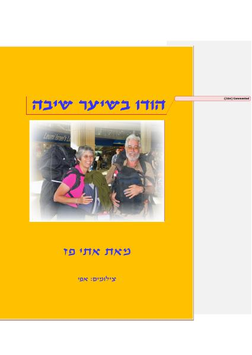

תבונה, מודעות והרחבת הדעת
ספרים
ספרים ותרגומים בנושאי תבונה, מודעות, הרחבת הדעת ויציאה מהדעת.
הספר אודות הטאבו
תרגום הספר "The Book: On the Taboo Against Knowing Who You Are" מאת אלן ואטס.

הודו בשיער שיבה
רשמים והרהורים ממסעות להודו לאחר שנים רבות. מבט אחר דרך עיניים שנצברה בהן חוכמה.
מורים
מורים שתורתם השפיעה עלי.
ג'ידו קרישנמורטי
1895-1986 | פילוסוף הודי
קרישנמורטי היה פילוסוף ונואם שהדגיש שהאמת היא ארץ ללא שבילים. תורתו מתמקדת בטבע המחשבה, מדיטציה ללא שיטה וחופש פסיכולוגי.
לתכניםאנתוני דה מלו
1931-1987 | כומר ישועי הודי
אנתוני דה מלו שילב מסורות רוחניות מזרחיות ומערביות. עבודתו מדגישה מודעות, התעוררות מאשליות ומציאת אושר דרך הבנה.
לתכניםניזרגדטה מהראג'
1897-1981 | מורה אדוואיטה
ניזרגדטה מהראג' היה מורה אדוואיטה (אי-שניות) מבומביי. ספרו "אני זה" (I Am That) נחשב לאחד הטקסטים החשובים ברוחניות המודרנית.
לתכניםאטמאננדה קרישנה מנון
1883-1959 | מורה אדוואיטה
אטמאננדה היה מורה אדוואיטה מקראלה, הודו. שיטתו הישירה והמודרנית השפיעה על דורות של מחפשים רוחניים.
לתכניםברוך שפינוזה
1632-1677 | פילוסוף יהודי-הולנדי
שפינוזה היה אחד הפילוסופים החשובים של העת החדשה. תורתו על האל כטבע עצמו ועל חופש המחשבה השפיעה על הוגים רבים.
לתכנים